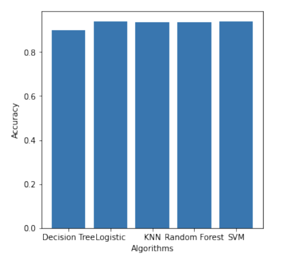
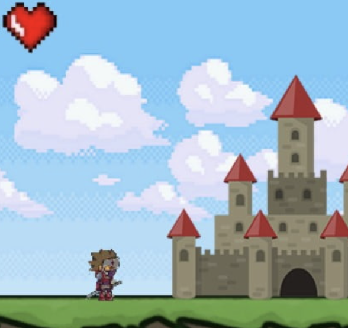

|
I am a computer science student with a strong interest in research and the tech community. I have always been fascinated by the endless possibilities of technology and how it can be used to improve our lives. As a computer science student, I have gained a strong foundation in computer programming, algorithms, and data structures, as well as a deep understanding of the theories and principles behind computing. Besides research and programming, I enjoy reading, music and travelling. |
 |
News
- Feb 2023: Started GradYard as a Founder.
- Aug 2023: Joined McGill University, Canada as a Graduate Student under Prof. Jorg Kienzle.
- Feb 2023: Joined Indian Institute of Technology - BHU as a Research Intern under Prof. Neeraj Sharma.
- Oct 2022: Started as Google Developers Student Clubs Lead at Vel Tech.
- Aug 2022: Joined Athabasca University as a Research Intern under Prof. Maiga Chang.
- July 2022: Selected as Google Developers Student Clubs Lead
- Dec 2021: Selected as MITACS Globalink Research Scholar.
- Aug 2020: Joined Turquoise as a Full Stack Developer.
- June 2020: Joined Turquoise as a Research & Development Intern.
- July 2019: Started my bachelor's in Computer Science Engineering at Vel Tech..
Projects and Research Work

|
Suraj Van Verma, Maiga Chang Mitacs Globalink Research Project (RiveScript, WordNet, NLP) [ Demo / Report ] Improved the previous web based editing environment by implementing features that can enhance the ability to create new chatbots. |
|  |
Suraj Van Verma, Shaheen Naiyer, Sakshi Kumari Minor Project, VelTech (Decision Tree, Logistic Regression, KNN, Random Forest) [ Code / Report ] A comparative study on various algorithms in machine learning to predict stroke in a patient. |

|
Suraj Van Verma, Bhargav Seminar, VelTech (Biometric, Eigenface, Fisher Face, SURF) [ Report (Draft) ] The work aims to create an interactive voting system where users can use their pre-stored database information to vote. Through facial recognition, we can create a secure system with voting methods. |
|
Suraj Van Verma Personal (Python, Django, JavaScript) [ Code ] A cloud-based application for storing and organising commonly used code components. |
|
|  |
Suraj Van Verma Personal (Python, PyGame, OOPs) [ Code ] As a part of learning Object Oriented Programming. Developed a game for MLH Hackathon in 2020. |